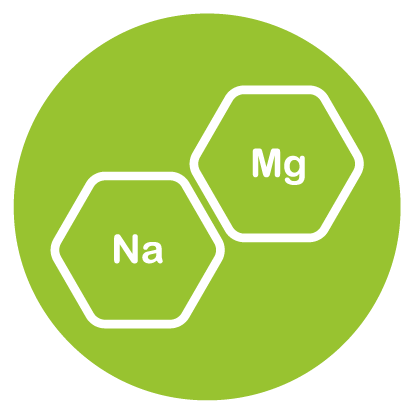
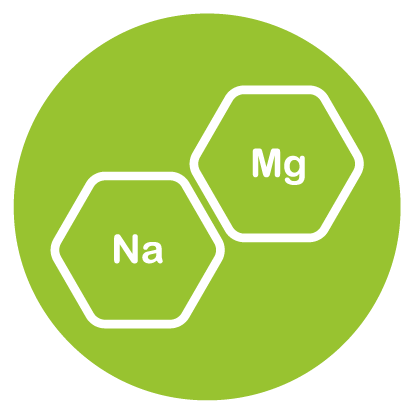

鳳梨是原產於南美洲巴西、巴拉圭的亞馬遜河流域一帶的熱帶水果，現在已於熱帶地區廣泛種植。因多汁酸甜受到喜愛，有解暑之效。為禾本目鳳梨科鳳梨屬植物。另外「鳳梨」在中國大陸以及港澳地區被稱為「菠蘿」。

 

熱量 (kcal)
脂肪
膳食纖維
醣類
糖
蛋白質
48
0.12
1.4
12.63
9.26
0.54
kcal
g
g
g
g
g
維生素B1
維生素B2
維生素B3
維生素B5
維生素B6
維生素B9
維生素C
0.079
0.031
0.489
0.205
0.110
15
36.2
mg
mg
mg
mg
mg
μg
mg
鉀 K
鈣 Ca
鐵 Fe
鎂 Mg
錳 Mn
磷 P
鋅 Zn
115
13
0.28
12
0.9
8
0.10
mg
mg
mg
mg
mg
mg
mg